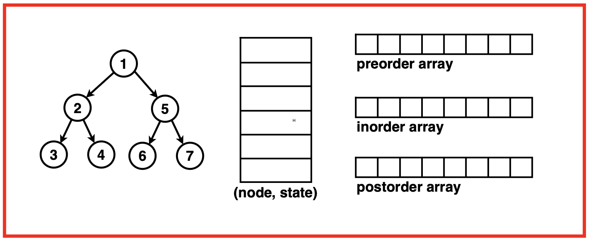
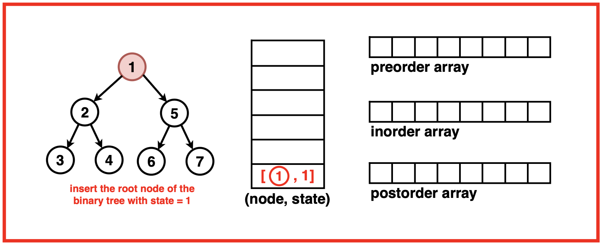
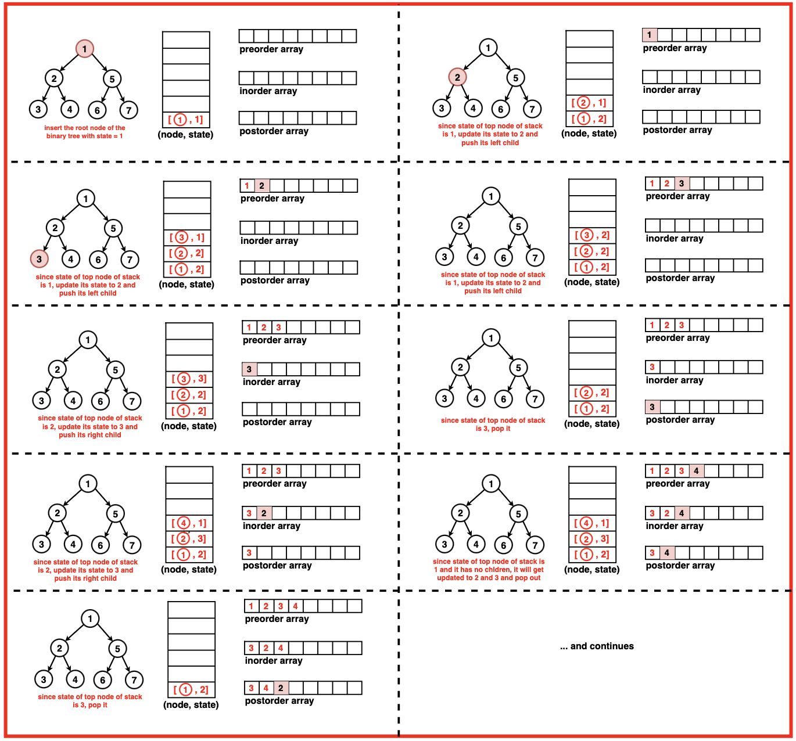

Preorder Inorder Postorder Traversals in One Traversal
Problem Statement: Given the root of a Binary Tree, return the preorder, inorder and postorder traversal sequence of the given tree by making just one traversal.
Disclaimer: Don’t jump directly to the solution, try it out
yourself first.
Optimal Approach
Algorithm / Intuition
This approach traverses the binary tree in a single pass while computing the preorder, inorder and postorder traversals at the same time. A stack is used for state management. The stack keeps track of the traversal state for each node. It stores nodes and their state information allowing the algorithm to resume traversal from intermediate points.For each node, it identifies its state: if it's in the pre-order state, it records the node's value and pushes the left child onto the stack. Moving to the in-order state, it records the node's value and pushes the right child onto the stack. Finally, in the post-order state, it stores the node's value and pops the node.As the algorithm executes over each node, it pushes each value in separate arrays for preorder, inorder and postorder traversals depending upon the current order and sequence. Hence, we are able to traverse the tree just once and get all three traversals from it.
Algorithm:
Step 1: Initialise a stack that holds a tree node and an integer value representing its state corresponding to pre order, inorder and postorder. Initialise empty arrays to store the three traversals as well.Check if the tree is empty. If so, return empty traversals.

Step 2: Push the root node onto the stack along with its state ‘1’ (preorder) to start the traversal.

Step 3:
While the stack isn’t empty, pop the top node of the stack and for each node:
If the state is ‘1’ ie. preorder: store the node’s data in the preorder array and move its state to 2 (inorder) for this node. Push this updated state back onto the stack and push its left child as well.
If the state is ‘2’ ie. inorder: store the node’s data is the inorder array and update its state to 3 (postorder) for this node. Push the updated state back onto the stack and push the right child onto the stack as well.
If the state is ‘3’ ie. postorder: store the node’s data in the postorder array and pop it.

Step 4: Return the preorder, inorder and postorder array.
Code
#include <iostream>
#include <vector>
#include <stack>
using namespace std;
// Node structure for the binary tree
struct Node {
int data;
Node* left;
Node* right;
// Constructor to initialize
// the node with a value
Node(int val) : data(val), left(nullptr), right(nullptr) {}
};
// Function to get the Preorder,
// Inorder and Postorder traversal
// Of Binary Tree in One traversal
vector<vector<int>> preInPostTraversal(Node* root) {
// Vectors to store traversals
vector<int> pre, in, post;
// If the tree is empty,
// return empty traversals
if (root == NULL) {
return {};
}
// Stack to maintain nodes
// and their traversal state
stack<pair<Node*, int>> st;
// Start with the root node
// and state 1 (preorder)
st.push({root, 1});
while (!st.empty()) {
auto it = st.top();
st.pop();
// this is part of pre
if (it.second == 1) {
// Store the node's data
// in the preorder traversal
pre.push_back(it.first->data);
// Move to state 2
// (inorder) for this node
it.second = 2;
// Push the updated state
// back onto the stack
st.push(it);
// Push left child onto
// the stack for processing
if (it.first->left != NULL) {
st.push({it.first->left, 1});
}
}
// this is a part of in
else if (it.second == 2) {
// Store the node's data
// in the inorder traversal
in.push_back(it.first->data);
// Move to state 3
// (postorder) for this node
it.second = 3;
// Push the updated state
// back onto the stack
st.push(it);
// Push right child onto
// the stack for processing
if (it.first->right != NULL) {
st.push({it.first->right, 1});
}
}
// this is part of post
else {
// Store the node's data
// in the postorder traversal
post.push_back(it.first->data);
}
}
// Returning the traversals
vector<vector<int>> result;
result.push_back(pre);
result.push_back(in);
result.push_back(post);
return result;
}
// Function to print the
// elements of a vector
void printVector(const vector<int>& vec) {
// Iterate through the vector
// and print each element
for (int num : vec) {
cout << num << " ";
}
cout << endl;
}
// Main function
int main()
{
// Creating a sample binary tree
Node* root = new Node(1);
root->left = new Node(2);
root->right = new Node(3);
root->left->left = new Node(4);
root->left->right = new Node(5);
// Getting the pre-order, in-order,
// and post-order traversals
vector<int> pre, in, post;
vector<vector<int>> traversals = preInPostTraversal(root);
// Extracting the traversals
// from the result
pre = traversals[0];
in = traversals[1];
post = traversals[2];
// Printing the traversals
cout << "Preorder traversal: ";
for (int val : pre) {
cout << val << " ";
}
cout << endl;
cout << "Inorder traversal: ";
for (int val : in) {
cout << val << " ";
}
cout << endl;
cout << "Postorder traversal: ";
for (int val : post) {
cout << val << " ";
}
cout << endl;
return 0;
}
import java.util.*;
// Node structure for the binary tree
class Node {
int data;
Node left;
Node right;
// Constructor to initialize
// the node with a value
Node(int val) {
data = val;
left = null;
right = null;
}
}
public class TreeTraversal {
// Function to get the Preorder,
// Inorder and Postorder traversal
// Of Binary Tree in One traversal
public static List<List<Integer>> preInPostTraversal(Node root) {
// Lists to store traversals
List<Integer> pre = new ArrayList<>();
List<Integer> in = new ArrayList<>();
List<Integer> post = new ArrayList<>();
// If the tree is empty,
// return empty traversals
if (root == null) {
return new ArrayList<>();
}
// Stack to maintain nodes
// and their traversal state
Stack<Pair<Node, Integer>> st = new Stack<>();
// Start with the root node
// and state 1 (preorder)
st.push(new Pair<>(root, 1));
while (!st.empty()) {
Pair<Node, Integer> it = st.pop();
// this is part of pre
if (it.getValue() == 1) {
// Store the node's data
// in the preorder traversal
pre.add(it.getKey().data);
// Move to state 2
// (inorder) for this node
it.setValue(2);
// Push the updated state
// back onto the stack
st.push(it);
// Push left child onto
// the stack for processing
if (it.getKey().left != null) {
st.push(new Pair<>(it.getKey().left, 1));
}
}
// this is a part of in
else if (it.getValue() == 2) {
// Store the node's data
// in the inorder traversal
in.add(it.getKey().data);
// Move to state 3
// (postorder) for this node
it.setValue(3);
// Push the updated state
// back onto the stack
st.push(it);
// Push right child onto
// the stack for processing
if (it.getKey().right != null) {
st.push(new Pair<>(it.getKey().right, 1));
}
}
// this is part of post
else {
// Store the node's data
// in the postorder traversal
post.add(it.getKey().data);
}
}
// Returning the traversals
List<List<Integer>> result = new ArrayList<>();
result.add(pre);
result.add(in);
result.add(post);
return result;
}
// Function to print the
// elements of a list
public static void printList(List<Integer> list) {
// Iterate through the list
// and print each element
for (int num : list) {
System.out.print(num + " ");
}
System.out.println();
}
// Main function
public static void main(String[] args) {
// Creating a sample binary tree
Node root = new Node(1);
root.left = new Node(2);
root.right = new Node(3);
root.left.left = new Node(4);
root.left.right = new Node(5);
// Getting the pre-order, in-order,
// and post-order traversals
List<Integer> pre, in, post;
List<List<Integer>> traversals = preInPostTraversal(root);
// Extracting the traversals
// from the result
pre = traversals.get(0);
in = traversals.get(1);
post = traversals.get(2);
// Printing the traversals
System.out.print("Preorder traversal: ");
printList(pre);
System.out.print("Inorder traversal: ");
printList(in);
System.out.print("Postorder traversal: ");
printList(post);
}
}
# Node class for the binary tree
class Node:
def __init__(self, val):
self.data = val
self.left = None
self.right = None
# Function to get the Preorder,
# Inorder and Postorder traversal
# Of Binary Tree in One traversal
def pre_in_post_traversal(root):
# Lists to store traversals
pre, in_order, post = [], [], []
# If the tree is empty,
# return empty traversals
if root is None:
return []
# Stack to maintain nodes
# and their traversal state
stack = [(root, 1)]
while stack:
node, state = stack.pop()
# this is part of pre
if state == 1:
# Store the node's data
# in the preorder traversal
pre.append(node.data)
# Move to state 2
# (inorder) for this node
state = 2
# Push the updated state
# back onto the stack
stack.append((node, state))
# Push left child onto
# the stack for processing
if node.left:
stack.append((node.left, 1))
# this is a part of in
elif state == 2:
# Store the node's data
# in the inorder traversal
in_order.append(node.data)
# Move to state 3
# (postorder) for this node
state = 3
# Push the updated state
# back onto the stack
stack.append((node, state))
# Push right child onto
# the stack for processing
if node.right:
stack.append((node.right, 1))
# this is part of post
else:
# Store the node's data
# in the postorder traversal
post.append(node.data)
# Returning the traversals
return [pre, in_order, post]
# Function to print the
# elements of a list
def print_list(lst):
# Iterate through the list
# and print each element
for num in lst:
print(num, end=" ")
print()
# Main function
if __name__ == "__main__":
# Creating a sample binary tree
root = Node(1)
root.left = Node(2)
root.right = Node(3)
root.left.left = Node(4)
root.left.right = Node(5)
# Getting the pre-order, in-order,
# and post-order traversals
traversals = pre_in_post_traversal(root)
# Extracting the traversals
# from the result
pre, in_order, post = traversals
# Printing the traversals
print("Preorder traversal: ", end="")
print_list(pre)
print("Inorder traversal: ", end="")
print_list(in_order)
print("Postorder traversal: ", end="")
print_list(post)
// Node class for the binary tree
class Node {
constructor(val) {
this.data = val;
this.left = null;
this.right = null;
}
}
// Function to get Preorder, Inorder,
// and Postorder traversal of Binary
// Tree in One traversal
function preInPostTraversal(root) {
// Arrays to store traversals
let pre = [];
let inOrder = [];
let post = [];
// If the tree is empty,
// return empty traversals
if (!root) {
return [];
}
// Stack to maintain nodes
// and their traversal state
let stack = [];
// Start with the root
// node and state 1 (preorder)
stack.push([root, 1]);
while (stack.length > 0) {
let [node, state] = stack.pop();
// This is part of pre
if (state === 1) {
// Store the node's data
// in the preorder traversal
pre.push(node.data);
// Move to state 2
// (inorder) for this node
state = 2;
// Push the updated state
// back onto the stack
stack.push([node, state]);
// Push left child onto
// the stack for processing
if (node.left !== null) {
stack.push([node.left, 1]);
}
}
// This is a part of in
else if (state === 2) {
// Store the node's data
// in the inorder traversal
inOrder.push(node.data);
// Move to state 3
// (postorder) for this node
state = 3;
// Push the updated state
// back onto the stack
stack.push([node, state]);
// Push right child onto
// the stack for processing
if (node.right !== null) {
stack.push([node.right, 1]);
}
}
// This is part of post
else {
// Store the node's data
// in the postorder traversal
post.push(node.data);
}
}
// Returning the traversals
return [pre, inOrder, post];
}
// Function to print
// the elements of an array
function printArray(arr) {
// Iterate through the
// array and print each element
for (let val of arr) {
process.stdout.write(val + " ");
}
process.stdout.write("\n");
}
// Main function
function main() {
// Creating a sample binary tree
let root = new Node(1);
root.left = new Node(2);
root.right = new Node(3);
root.left.left = new Node(4);
root.left.right = new Node(5);
// Getting the pre-order,
// in-order, and post-order traversals
let traversals = preInPostTraversal(root);
// Extracting the
// traversals from the result
let pre = traversals[0];
let inOrder = traversals[1];
let post = traversals[2];
// Printing the traversals
process.stdout.write("Preorder traversal: ");
printArray(pre);
process.stdout.write("Inorder traversal: ");
printArray(inOrder);
process.stdout.write("Postorder traversal: ");
printArray(post);
}
main();
Time Complexity: O(3N) where N is the number of nodes in the Binary Tree. Each node is processed once for each traversal type (pre-order, in-order, and post-order). Hence, the algorithm effectively visits each node three times in total across the three traversal types.
Space Complexity: O(4N) where N is the number of nodes in the Binary Tree. The following additional data structures are used:A stack to maintain traversal states, requiring additional space proportional to the maximum number of nodes in the stack at any point during traversal.Three vectors to store the preorder, inorder and postorder traversal. These arrays collectively occupy space proportional to the total number of nodes in the tree. Hence, 3N is added to the space complexity.
Video Explanation
Special thanks to Gauri Tomar for contributing to this article on takeUforward. If you also wish to share your knowledge with the takeUforward fam, please check out this article